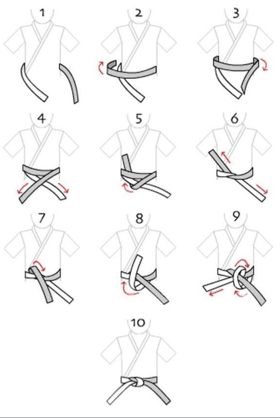
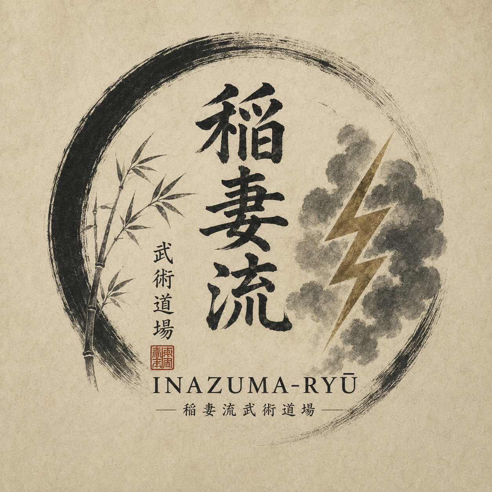

Cette page permet à tous les pratiquants et passionnés de l'Inazuma-Ryū de partager leurs démonstrations, entraînements, kata ou techniques.
Avant d'envoyer une vidéo, assurez-vous qu'elle respecte les principes de l'Inazuma-Ryū :
• Respect.
• Discipline.
• Sécurité.
• Esprit du Budō.
Une vidéo peut mettre une heure à deux jours pour être vérifiée et affichée
Cliquez sur le lien ci-dessous pour envoyer votre vidéo :

